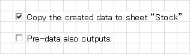
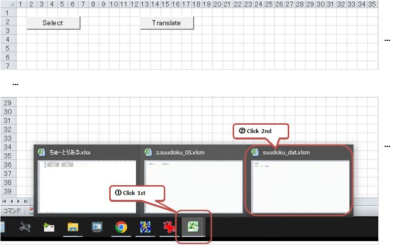
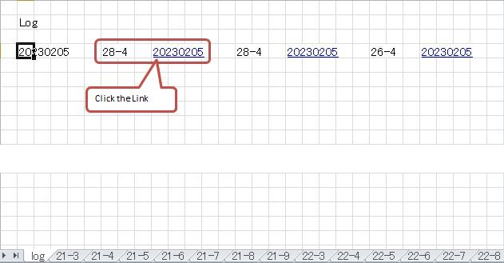

"Sudoku Puzzle Generator Tool Update" User's Manual
A new logic has been added to record the puzzles created with this tool.
Since these puzzles take time to generate, I wanted to make it easy to save any interesting ones.
If you are using this tool for the first time, please read
suudoku_02_doc_en.
Although the layout has been slightly modified,
you will still be able to understand the overall structure of the tool.
Notes on using this tool
- Unauthorized redistribution of this tool is strictly prohibited.
-
If you are considering improving or modifying the logic,
please contact me and I will send you the source code.
If you succeed in achieving 22 or 21 opens through modifications, I'd be very happy to hear from you—hopefully you can also share the modified logic.
Install
Unzip z.suudoku_03_en.zip. Once unzipped, the "z.suudoku_03_en" folder will appear. All necessary data is stored in "z.suudoku_03_en". Move the "z.suudoku_03_en" folder to a suitable location.
Uninstall
Please delete the "z.suudoku_03_en" folder. The deletion is now complete.
Start
Double-click z.suudoku_03_en (or z.suudoku_03_en.xlsm if the extension is displayed) in the "z.suudoku_03_en" folder. The Sudoku puzzle creation tool will start.
The updates are as follows:
-
The file name of this tool has been updated from "z.suudoku_02.xlsm" to "z.suudoku_03.xlsm." If you have been using z.suudoku_02.xlsm, it is no longer necessary. Please switch to the new z.suudoku_03.xlsm.
-
- On the data creation sheet [Make], a new checkbox has been added to specify whether or not to record the generated data.
- In Block 2-2, where the initial open-cell patterns are specified, patterns [13] through [16] have been added.
-
A new sheet [Stock] has been added to temporarily store generated puzzles.
-
A new workbook suudoku_dat.xlsm (abbreviated as suudoku_dat) has been added to store selected puzzles you wish to keep.
A simple explanation of the workflow is given below:
-
Open z.suudoku_03.xlsm from Explorer. On the [Make] sheet, check that the box "Copy the created data to sheet [Stock]" (bottom right) is selected.
-
Press the [Start] button. After a short while, a message box saying "Congratulations!" will appear. The puzzle has been successfully generated!

-
Click on the [Stock] sheet tab.

The generated data will be displayed.
A circle mark (○) appears in the data header.
If you want to record the data, press the "Translate" button.
For the following operation, please refer to section 5: "Press the Translate button".If the data does not need to be recorded, remove the circle mark.
Pressing the "Select" button will clear the displayed data.

Return to the [Make] sheet and continue creating puzzles.
-
About "Output pre-data"
This has not been explained so far, but when "Copy the created data to the sheet "Stock" is checked,
an additional checkbox labeled "Output pre-data" will appear below it.
By default, this option is not checked. In this case, the process will be carried out as described in section 3.
If you check this option, then when a completed form is obtained with an open number just before the specified open number, that data will also be copied to the "Stock" sheet.
For example, if the specified open number is "26", then a completed form with "28" obtained during the search for "26" will also be copied to the "Stock" sheet.Below is an example when "Output pre-data" is checked.

A circle mark "○" is shown in the header of each dataset.
If multiple datasets are displayed, remove the circle mark for those you do not wish to record (if only one dataset is displayed, do not remove the circle). (As a personal recommendation, keeping the datasets with fewer trial counts — the number under "loop" — tends to be better.) Press the [Select] button, and only the datasets marked with "○" will remain.
-
Press the [Translate] button. After a short while, the data will disappear — but don’t worry.

Hover the cursor over the Excel icon in the taskbar at the bottom of the screen (①). A popup for "suudoku_dat.xlsm" will appear — click on it (②).

The [log] sheet will appear first. Here, the header information of the datasets previously marked with "○" are listed, together with the date stored, and each entry has a hyperlink.

Clicking a link will display the corresponding dataset on the sheet where it is stored. In this way, generated puzzles are stored in sheets named by their number of open cells and the loop count required to solve them.

-
Repeating steps 1 through 4 increases the number of stored datasets. Each sheet contains datasets with the same number of open cells, considered to be of the same difficulty level.
Pressing the [Sort] button rearranges the data by pattern (Note:) and displays it below the block showing the original dataset. (The original datasets are displayed chronologically and remain unchanged.)
Note: The pattern refers to the arrangement of initially opened cells within the 3x3 center block (top-right in step 1).